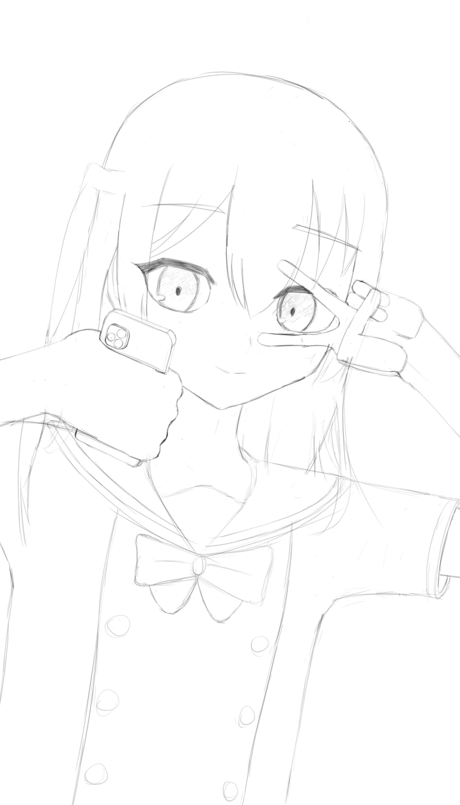

2024/09/27 - Kita-Chan Selfie
Bocchi's Comments
I wanted to draw Kita-chan since she's one of my favourite characters from Bocchi the Rock. Having her taking a selfie felt in character for her and it would let me practice hands without it feeling like practice lol
I think it turned out pretty good, my faces are getting better and the uniform was decent for my first attempt at clothes
The left hand looks kinda flat and the right hand doesn't really make sense lol. I did find it difficult trying to draw her hand holding the phone; I should probably use a reference next time
Just realising now but should probably make the eyebrows thinner in the future too